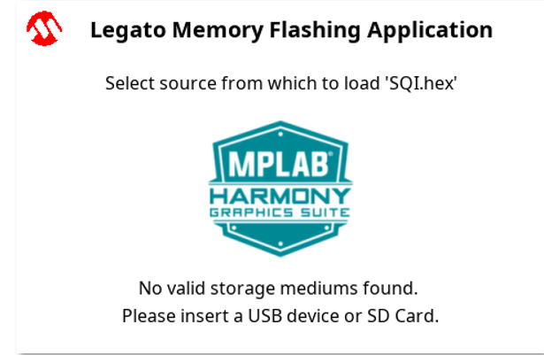
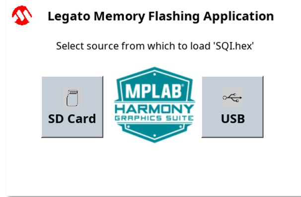

|
MPLAB® Harmony Graphics Suite
|
|
MPLAB® Harmony Graphics Suite
|

This application uses the USB file systems in MPLAB Harmony and the USB driver to scan the MSD for a .hex file with resources and reads them sector by sector and programs the external non-volatile QSPI memory. The Graphics Library is used to render graphics to the scratch buffer. Via the ILI9488 Display Driver, boosted with a combination of DMA and CCL peripherals, scratch buffer data is transferred out to the ILI9488 controller via 8-bit parallel in 8080 mode.
The application also features user touch input through the integrated touch screen on the display panel. Touch input from the touch controller goes through the I2C port, and the Input System Service acquires the touch input information from the Touch and I2C drivers. The Input System Service sends touch events to the Graphics Library, which processes these events and updates the frame data accordingly.
This configuration runs on the SAM E54 Curiosity Ultra board with a 24-bit passthrough GFX interface card and a maXTouch Curiosity Pro display. The maXTouch Curiosity Pro display has an ILI9488 display controller that is connected to the SAM E54 thru the port/GPIO peripheral using an 8-bit 8080/Parallel interface, boosted with a combination of DMA and CCL peripherals. The Legato graphics library draws the updated sections of the frame to an internal scratch buffer which is used by the ILI9488 display driver to update the ILI9488 display controller.
User touch input on the display panel is received thru the PCAP capacitive touch controller, which sends a notification to the Touch Input Driver. The Touch Input Driver reads the touch information over I2C and sends the touch event to the Graphics Library thru the Input System Service.
The USB peripheral is setup in MSD Host mode with the File System service support. It scans for a file named SQI.hex when a USB MSD device is connected. The application reads the hex data from the file and decodes it with a hex decoder into binary data. The binary is written to external non-volatile memory via the QSPI peripheral configured with the SST26 driver.

Adding the SAM E54 Curiosity Ultra BSP and Legato Graphics w/ MXT Curiosity Pro Display Graphics Template component into the project graph.
This will automatically add the components needed for a graphics project and resolve their dependencies. It will also configure the pins needed to drive the external peripherals like the display and the touch controller.
For the DMA-CCL boosted setup, components TC4, CCL needs to be added.
Additional components to support File System, MSD Client Driver, USB Full Speed Driver, USB Host Layer, SDMMC, SDHC1, QSPI and SST26 needs to be added and connected manually.
Some of these components are fine with default settings, while other require some changes. The following is a list of all the components that required custom settings.


For QSPI access, make sure all 7 pins for QSPI is mapped.

To setup the CCL to clock the pixel data, make sure PB09 is set to CCL_OUT2

Instead of write strobe, make sure PB17 is setup as RSDC instead

The parent directory for this application is gfx/apps/legato_flash. To build this application, use MPLAB X IDE to open the gfx/apps/legato_flash/firmware/legato_fl_e54_cult_cpro_parallel.X project file.
The following table lists configuration properties:
| Project Name | BSP Used | Graphics Template Used | Description |
|---|---|---|---|
| legato_fl_e54_cult_cpro_parallel.X | SAM E54 Curiosity Ultra BSP | Legato Graphics w/ Xplained Pro Display | SAM E54 Curiosity Ultra w/ maXTouch Xplained Pro display via 8-bit parallel interface |
**_NOTE:_** This application may contain custom code that is marked by the comments // START OF CUSTOM CODE ... and // END OF CUSTOM CODE. When using the MPLAB Harmony Configurator to regenerate the application code, use the "ALL" merging strategy and do not remove or replace the custom code.
This section describes how to configure the supported hardware.
Configure the hardware as follows:
For media stored on USB device:
The final hardware setup should be:

When power-on is successful, without a USB MSD device or SD MMC device attached to the Target USB port the demonstration will display a screen with the message No valid storage mediums found. Please insert a USB device or SD Card:

If a valid USB MSD device is connected, the display will a USB button. LED1 (red) will light up also.
If a valid SDMMC device is connected, the display will a SD button. LED2 (yellow) will light up also.

Make sure the USB MSD device or the SD MMC device has FAT32 file system format and a valid external resources file named precisely SQI.hex is copied inside.
Press and release the SD button or the USB button on-screen. The application will initiate the data transfer on release of the button. Depending on the size of SQI.hex file (greater than 500 kilobytes), the application may freeze with no visual feedback, upwards of 30 seconds. It will then display a progress bar to indicate the transfer. The transfer completes when the progress bar is filled. The application will then display a button with OK.

 1.8.18
1.8.18